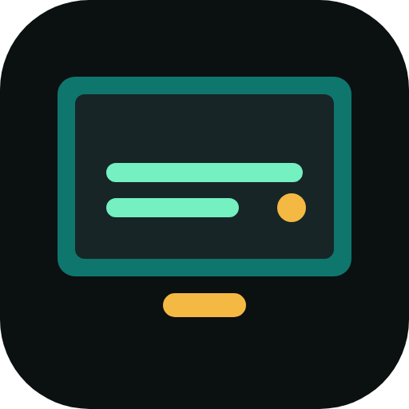
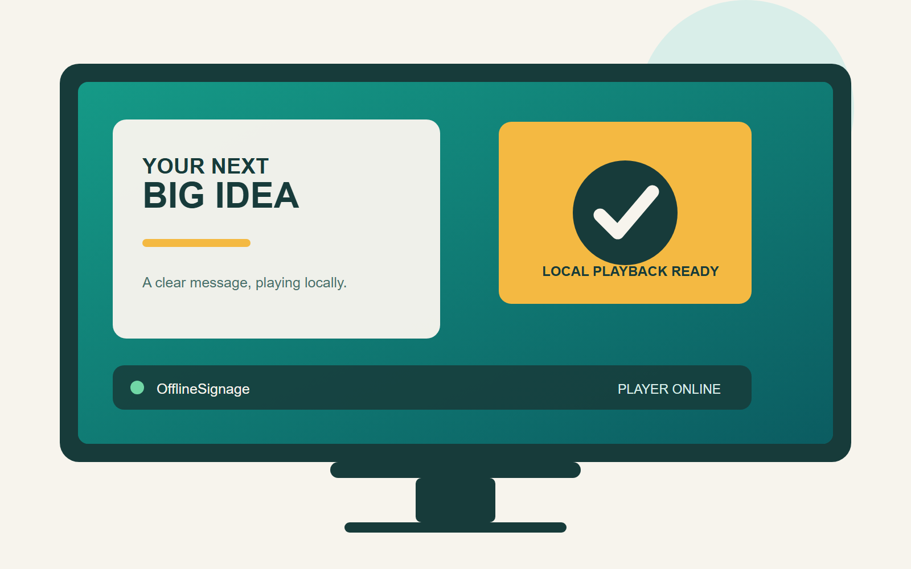
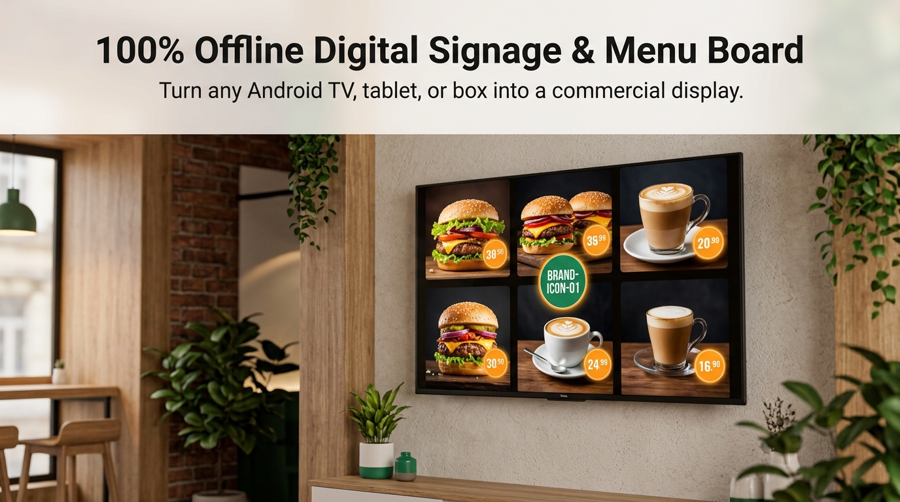
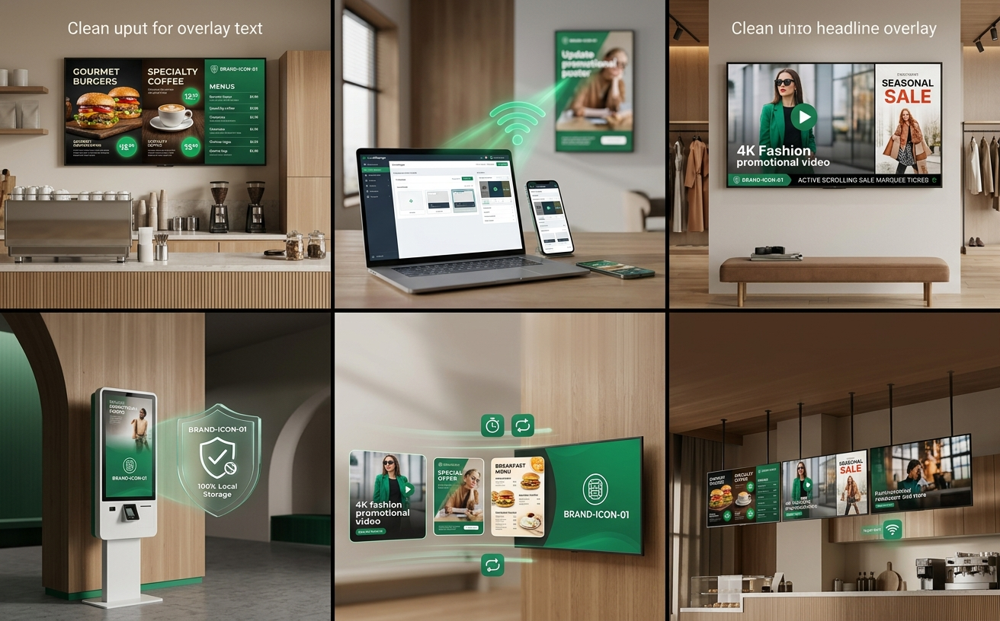
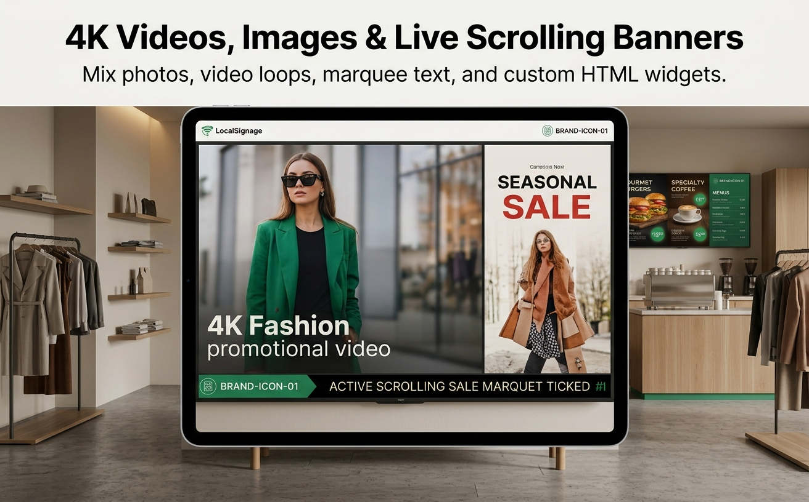
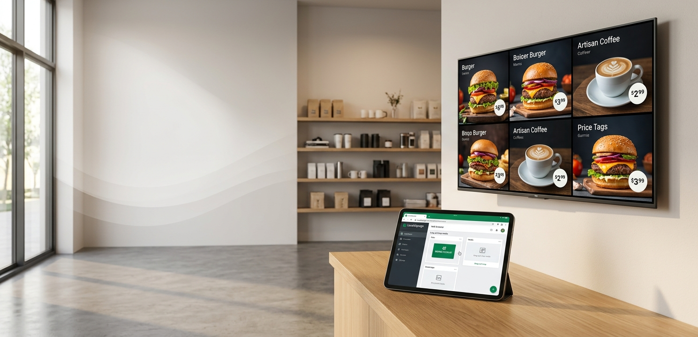
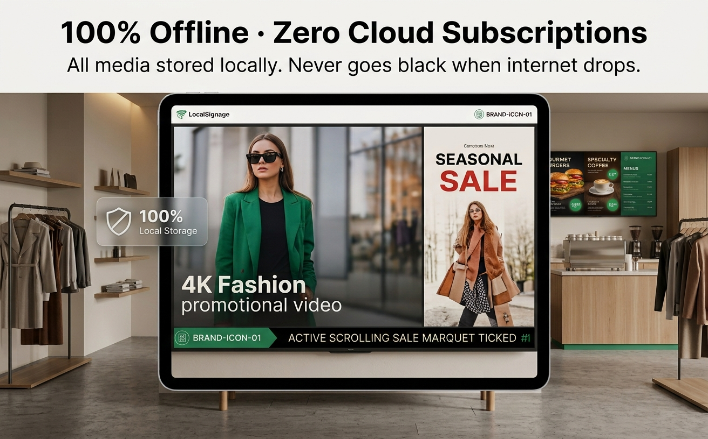

Reprodução de mídia local
Reproduza imagens, vídeos, conteúdo web e playlists diretamente no dispositivo.

OfflineSignageSoftware de sinalização digital Android
Sinalização local, simples e confiável.
Transforme players Android, TVs, tablets e celulares antigos em telas digitais.

Tudo é pensado para uma sinalização estável, da reprodução local ao controle pelo navegador.
Reproduza imagens, vídeos, conteúdo web e playlists diretamente no dispositivo.
Controle o player usando um navegador na mesma rede.
Mantenha a tela ativa e recupere o serviço e a reprodução após uma reinicialização.
Primeiro para players de publicidade Android, com suporte planejado para TVs, tablets e celulares antigos.





Comece com os dispositivos que você já tem e cresça para uma rede local de telas.
Sinalização sem depender de nuvem, contas ou servidores dedicados.
Reproduza imagens, vídeos, conteúdo web e playlists diretamente no dispositivo.
Controle o player usando um navegador na mesma rede.
Mantenha a tela ativa e recupere o serviço e a reprodução após uma reinicialização.
Encontre telas próximas e sincronize recursos e playlists.
Configure tela cheia, orientação, volume e mudo para uso prolongado.
Instale, conecte, adicione conteúdo e reproduza. A tela continua funcionando mesmo com o navegador fechado.
Em breve compartilharemos novidades do desenvolvimento e dos testes iniciais.
Ver o roteiro do produtoFale com a equipe
OfflineSignage
上海促动科技有限公司 · AndroidManTou
O OfflineSignage é desenvolvido e operado pela Shanghai Cudong Technology.